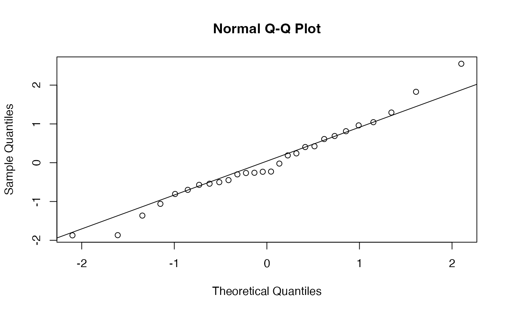

Extinction Risk Estimation for a Density-Independent Model
ext_di.RdEstimates demographic parameters and extinction probability under a density-independent (drifted Wiener) model. From a time series of population sizes, it estimates growth rate and variance using either a naive MLE variance estimator or an observation-error-and-autocovariance-robust (OEAR) estimator, then evaluates extinction risk over a horizon \(t^{\ast}\) with confidence intervals from the \(w\)–\(z\) method. In the observation-error-free setting, the naive \(w\)–\(z\) interval achieves near-nominal coverage, while OEAR can be more robust under additive observation error and unknown short-run autocovariance.
Arguments
- dat
Data frame with two numeric columns: time (strictly increasing) and population size. Column names are not restricted.
- ne
Numeric. Extinction threshold \(n_e \ge 1\). Default is 1.
- th
Numeric. Time horizon \(t^{\ast} > 0\). Default is 100.
- alpha
Numeric. Significance level \(\alpha \in (0,1)\). Default is 0.05.
- unit
Character. Unit of time (e.g., "years", "days", "generations"). Default is "years".
- qq_plot
Logical. If
TRUE, draws a QQ-plot of standardized increments to check model assumptions (naive method only). Default isFALSE.- formatted
Logical. If
TRUE, returns an"ext_di"object; otherwise returns a raw list. Default isTRUE.- digits
Integer. Preferred significant digits for printing. Affects display only. Default is
getOption("extr.digits", 5).- method
Character. Variance estimation method.
"naive"uses the MLE variance."oear"uses the OEAR HAC long-run-variance estimator (AR(1) pre-whitening + Bartlett kernel). Default is"naive".
Value
A list (class "ext_di" when formatted=TRUE) containing
extinction-risk estimates and diagnostics.
Core elements include Growth.rate, Variance,
Unbiased.variance, lower_cl_s, upper_cl_s,
linear_g, log_g, log_q,
ci_linear_g, ci_log_g, ci_log_q,
and data/input summaries (nq, xd, sample.size,
unit, ne, th, alpha).
Variance is method-dependent (naive MLE for method="naive",
OEAR HAC estimate for method="oear").
aic is reported only for method="naive" and is NA
for method="oear".
method_diag is NULL for naive and contains
rho_tilde_pw and j for oear.
lower_cl_s and upper_cl_s are chi-square based:
exact under method="naive" model assumptions, and pragmatic
plug-in approximations for method="oear".
Details
Population dynamics follow $$dX=\mu\,dt+\sigma\,dW,$$ where \(X(t)=\log N(t)\) and \(W\) is a Wiener process. Extinction risk is $$G=\Pr[T\le t^{\ast}\mid N(0)=n_0,n_e,\mu,\sigma],$$ the probability that population size falls below \(n_e\) within \(t^{\ast}\). Irregular observation intervals are allowed.
The function first estimates \(\mu\), then estimates a variance quantity
according to method:
naive: uses the drifted-Wiener MLE variance (Dennis et al., 1991).oear: uses an observation-error-and-autocovariance-robust (OEAR) HAC long-run-variance estimator with AR(1) pre-whitening and a Bartlett kernel (Hakoyama, in press).
For method = "oear", robustness to additive observation error relies
on long-run-variance cancellation of differenced observation error
(McNamara and Harding, 2004), while robustness to unknown short-run
autocovariance comes from HAC estimation of long-run variance.
Extinction probability is then computed as \(G(w,z)\) (Lande and Orzack, 1988), and confidence intervals are constructed using the \(w\)–\(z\) method (Hakoyama, in press).
References
Andrews, D. W. K. (1991). Heteroskedasticity and autocorrelation consistent covariance matrix estimation. Econometrica, 59(3), 817-858.
Dennis, B., Munholland, P.L., and Scott, J.M. (1991) Estimation of growth and extinction parameters for endangered species. Ecological Monographs, 61, 115-143.
Hakoyama, H. Confidence intervals for extinction risk: validating population viability analysis with limited data. Methods in Ecology and Evolution. In press. Preprint, doi:10.48550/arXiv.2509.09965
Lande, R. and Orzack, S.H. (1988) Extinction dynamics of age-structured populations in a fluctuating environment. Proceedings of the National Academy of Sciences, 85(19), 7418–7421.
McNamara, J. M. and Harding, K. C. (2004). Measurement error and estimates of population extinction risk. Ecology Letters, 7(1), 16-20.
Newey, W. K. and West, K. D. (1987). A simple, positive semi-definite, heteroskedasticity and autocorrelation consistent covariance matrix. Econometrica, 55(3), 703-708.
Examples
# Example from Dennis et al. (1991), Yellowstone grizzly bears.
# Population is a running 3-year sum (3-year moving total) digitized from
# Fig. 5.
dat <- data.frame(Time = 1959:1987,
Population = c(44, 47, 46, 44, 46, 45, 46, 40, 39, 39, 42, 44, 41, 40,
33, 36, 34, 39, 35, 34, 38, 36, 37, 41, 39, 51, 47, 57, 47))
# Probability of decline to 1 individual within 100 years
ext_di(dat, th = 100)
#> --- Estimates ---
#> Estimate
#> Probability of decline to 1 within 100 years (MLE): 9.4128e-05
#> Growth rate (MLE): 0.0023556
#> Environmental variance (MLE): 0.01087
#> Unbiased variance: 0.011273
#> AIC for the distribution of N: 165.06
#> CI
#> Probability of decline to 1 within 100 years (MLE): (1.4586e-13, 0.5653)
#> Growth rate (MLE): (-0.038814, 0.043525)
#> Environmental variance (MLE): (0.0070464, 0.020885)
#> Unbiased variance: -
#> AIC for the distribution of N: -
#>
#> --- Data Summary ---
#> Value
#> Current population size, nq: 47
#> xd = ln(nq / ne): 3.8501
#> Sample size, q + 1: 29
#>
#> --- Input Parameters ---
#> Parameter
#> Time unit: years
#> Extinction threshold of population size, ne: 1
#> Time window for extinction risk evaluation (years), th: 100.0
#> Significance level, alpha: 0.05
# Probability of decline to 10 individuals within 100 years
ext_di(dat, th = 100, ne = 10)
#> --- Estimates ---
#> Estimate
#> Probability of decline to 10 within 100 years (MLE): 0.096852
#> Growth rate (MLE): 0.0023556
#> Environmental variance (MLE): 0.01087
#> Unbiased variance: 0.011273
#> AIC for the distribution of N: 165.06
#> CI
#> Probability of decline to 10 within 100 years (MLE): (1.0699e-05, 0.9898)
#> Growth rate (MLE): (-0.038814, 0.043525)
#> Environmental variance (MLE): (0.0070464, 0.020885)
#> Unbiased variance: -
#> AIC for the distribution of N: -
#>
#> --- Data Summary ---
#> Value
#> Current population size, nq: 47
#> xd = ln(nq / ne): 1.5476
#> Sample size, q + 1: 29
#>
#> --- Input Parameters ---
#> Parameter
#> Time unit: years
#> Extinction threshold of population size, ne: 10
#> Time window for extinction risk evaluation (years), th: 100.0
#> Significance level, alpha: 0.05
# With QQ-plot
ext_di(dat, th = 100, ne = 10, qq_plot = TRUE)

#> --- Estimates ---
#> Estimate
#> Probability of decline to 10 within 100 years (MLE): 0.096852
#> Growth rate (MLE): 0.0023556
#> Environmental variance (MLE): 0.01087
#> Unbiased variance: 0.011273
#> AIC for the distribution of N: 165.06
#> CI
#> Probability of decline to 10 within 100 years (MLE): (1.0699e-05, 0.9898)
#> Growth rate (MLE): (-0.038814, 0.043525)
#> Environmental variance (MLE): (0.0070464, 0.020885)
#> Unbiased variance: -
#> AIC for the distribution of N: -
#>
#> --- Data Summary ---
#> Value
#> Current population size, nq: 47
#> xd = ln(nq / ne): 1.5476
#> Sample size, q + 1: 29
#>
#> --- Input Parameters ---
#> Parameter
#> Time unit: years
#> Extinction threshold of population size, ne: 10
#> Time window for extinction risk evaluation (years), th: 100.0
#> Significance level, alpha: 0.05
# OEAR method
ext_di(dat, th = 100, method = "oear")
#> --- Estimates ---
#> Estimate
#> Probability of decline to 1 within 100 years (OEAR plug-in): 5.1099e-10
#> Growth rate (MLE): 0.0023556
#> Process variance (OEAR): 0.0043077
#> AR(1) pre-whitening rho: -0.52522
#> Bartlett lag truncation (j): 4
#> CI
#> Probability of decline to 1 within 100 years (OEAR plug-in): (1.6408e-23, 0.027088)
#> Growth rate (MLE): (-0.038814, 0.043525)
#> Process variance (OEAR): (0.0027924, 0.0082765)
#> AR(1) pre-whitening rho: -
#> Bartlett lag truncation (j): -
#>
#> --- Data Summary ---
#> Value
#> Current population size, nq: 47
#> xd = ln(nq / ne): 3.8501
#> Sample size, q + 1: 29
#>
#> --- Input Parameters ---
#> Parameter
#> Time unit: years
#> Extinction threshold of population size, ne: 1
#> Time window for extinction risk evaluation (years), th: 100.0
#> Significance level, alpha: 0.05